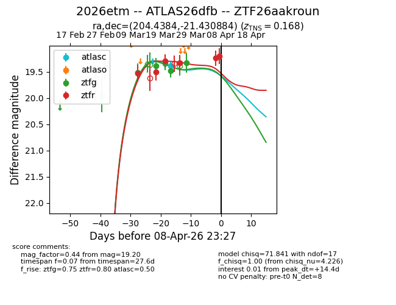
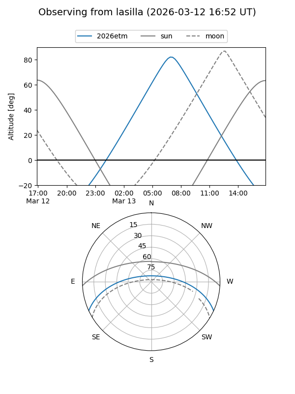
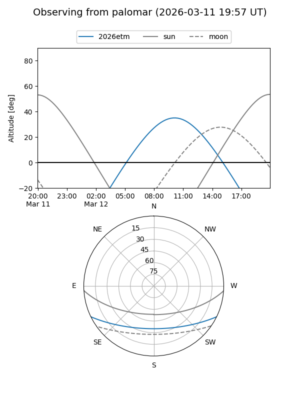
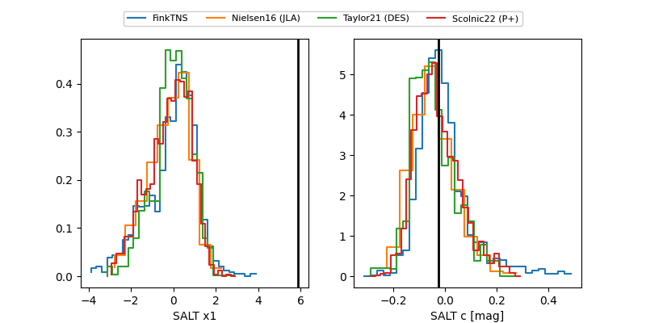

2026etm
Target 2026etm at 2026-04-08 23:34
Aliases and brokers:
FINK: link
Lasair: link
ALeRCE: link
TNS: link
YSE: link
alt names
ZTF26aakroun (ztf,fink_ztf)
2026etm (tns,yse)
ATLAS26dfb (atlas)
Coordinates:
equatorial (ra, dec) = 204.4384,-21.43088
equatorial (HMS+DMS) = 13:37:45.22,-21:25:51.18
galactic (l, b) = (317.0838,+40.16469)
Flags:
Photometry:
last atlasc=19.38, ztfg=19.33, ztfr=19.20
1 atlasc, 5 ztfg, 6 ztfr detections
Lightcurve

Visibility


Additional plots
